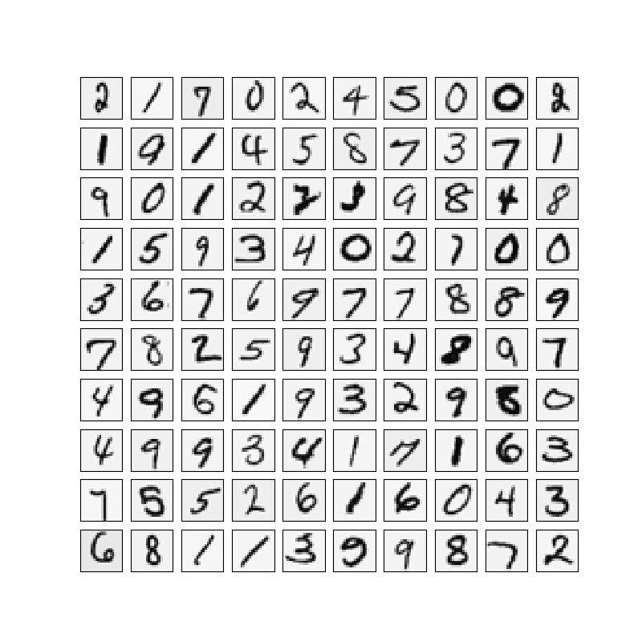
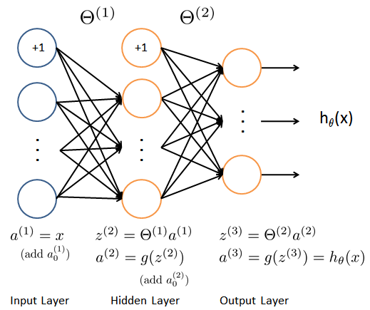
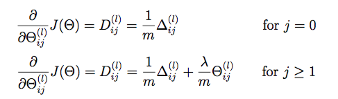
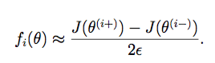
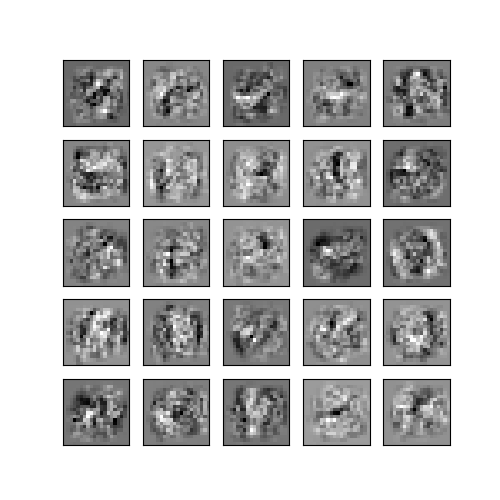

AndrewNg 机器学习习题ex4-NN back propagation
需要的头：1
2
3
4
5
6import matplotlib.pyplot as plt
import numpy as np
import scipy.io as sio
import matplotlib
import scipy.optimize as opt
from sklearn.metrics import classification_report # 这个包是评价报告
Visualizing the data
载入数据：1
2
3
4
5
6
7
8
9
10
11
12
13
14
15
16
17
18
19
20
21
22
23
24
25
26
27
28def load_data(path, transpose=True):
data = sio.loadmat(path)
y = data.get('y')
y = y.reshape(y.shape[0])
X = data.get('X')
if transpose:
X = np.array([im.reshape((20, 20)).T for im in X])
X = np.array([im.reshape(400) for im in X])
return X, y
X, y = load_data('./data/ex4data1.mat')
def plot_100_image(X):
size = int(np.sqrt(X.shape[1]))
sample_idx = np.random.choice(np.array(X.shape[0]), 100)
sample_images = X[sample_idx, :]
fig, ax_array = plt.subplots(nrows=10, ncols=10, sharey=True, sharex=True, figsize=(8, 8))
for r in range(10):
for c in range(10):
ax_array[r, c].matshow(sample_images[10 * r + c].reshape((size, size)), cmap=matplotlib.cm.binary)
plt.xticks(np.array([]))
plt.yticks(np.array([]))
plt.show()
plot_100_image(X)

准备数据
特征集合X添加一列全为1的偏差向量，把目标向量y进行OneHot编码。1
2
3
4
5
6
7
8X_raw, y_raw = load_data('./data/ex4data1.mat', transpose=False) # 这里转置
X = np.insert(X_raw, 0, np.ones(X_raw.shape[0]), axis=1) # 增加全为1的一列
print(y.shape) # (5000,)
y = np.array([y_raw]).T
from sklearn.preprocessing import OneHotEncoder
encoder = OneHotEncoder(sparse=False)
y_onehot = encoder.fit_transform(y)
print(y_onehot.shape) # (5000, 10)
读取权重
先读取出ex4weights.mat中的theta1和theta2，把theta展开后进行扁平化处理。1
2
3
4
5
6
7
8
9
10
11
12
13
14
15
16
17
18
19
20
21
22def load_weight(path):
data = sio.loadmat(path)
return data['Theta1'], data['Theta2']
t1, t2 = load_weight('./data/ex4weights.mat')
print(t1.shape, t2.shape) # (25, 401) (10, 26)
def serialize(a, b):
# np.ravel() 降维
# np.concatenate() 拼接
return np.concatenate((np.ravel(a), np.ravel(b)))
def deserialize(seq):
# 解开为两个theta
return seq[:25 * 401].reshape(25, 401), seq[25 * 401:].reshape(10, 26)
theta = serialize(t1, t2)
print(theta.shape) # (25 * 401) + (10 * 26) = 10285
前向传播 feed forward
（400 + 1） -> (25 + 1) -> (1)
1
2
3
4
5
6
7
8
9
10
11
12
13
14
15
16
17
18
19def sigmoid(z):
return 1 / (1 + np.exp(-z))
def feed_forward(theta, X):
t1, t2 = deserialize(theta)
m = X.shape[0]
a1 = X # 5000 * 401
z2 = a1 @ t1.T
a2 = np.insert(sigmoid(z2), 0, np.ones(m), axis=1) # 5000*26 第一列加一列一
z3 = a2 @ t2.T # 5000 * 100
h = sigmoid(z3) # 5000 * 10 这是 h_theta(X)
return a1, z2, a2, z3, h # 把每一层的计算都返回
#_, _, _, _, h = feed_forward(theta, X)
#print(h.shape) # (5000, 10)
代价函数与正则化
1 | def cost(theta, X, y): |
反向传播
1 | def sigmoid_gradient(z): |
梯度校验

梯度正则化：

1 | def regularized_gradient(theta, X, y, l=1): |
If your backpropagation implementation is correct,
the relative difference will be smaller than 10e-9 (assume epsilon=0.0001).
Relative Difference: 2.1466000818218673e-09
准备训练模型
1 | def random_init(size): |
Out put：1
2
3
4
5
6
7
8
9
10 fun: 0.32211992072588747
jac: array([ 2.15004329e-04, 3.88985627e-08, -3.33174201e-08, ...,
3.15328424e-05, 2.82831419e-05, -1.68082404e-05])
message: 'Max. number of function evaluations reached'
nfev: 400
nit: 26
status: 3
success: False
x: array([ 0.00000000e+00, 1.94492814e-04, -1.66587101e-04, ...,
-7.15493763e-01, -1.36561388e+00, -2.90127262e+00])
显示准确率
1 | _, y_answer = load_data('./data/ex4data1.mat') |
Out Put:1
2
3
4
5
6
7
8
9
10
11
12
13
14 precision recall f1-score support
1 1.00 0.79 0.88 500
2 0.73 1.00 0.85 500
3 0.82 0.99 0.89 500
4 1.00 0.89 0.94 500
5 1.00 0.86 0.92 500
6 0.94 0.99 0.97 500
7 0.99 0.81 0.89 500
8 0.94 0.95 0.95 500
9 0.96 0.95 0.95 500
10 0.96 0.98 0.97 500
avg / total 0.93 0.92 0.92 5000
显示隐藏层
1 | def plot_hidden_layer(theta): |
